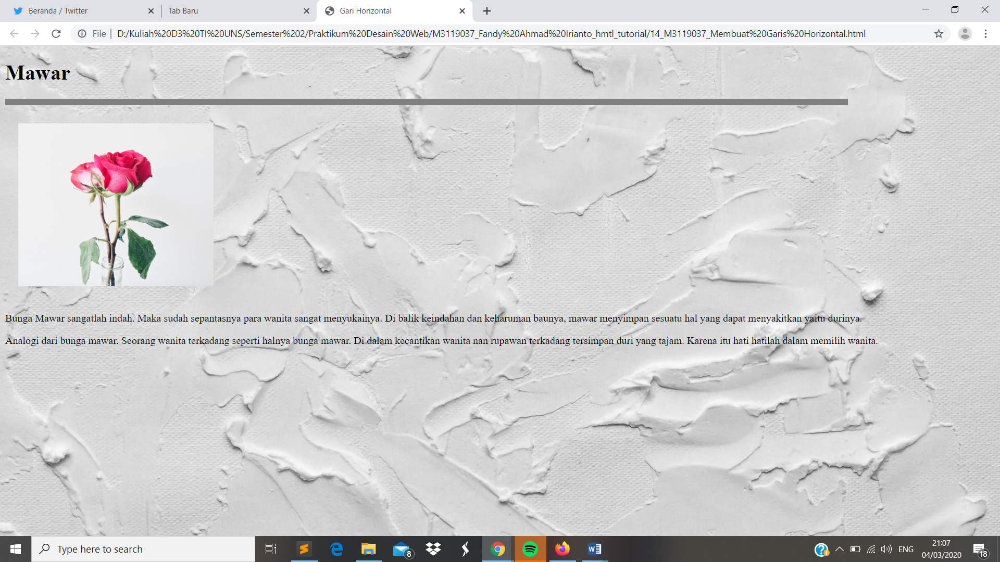

!DOCTYPE html>
Garis Horizontal.html
Garis Horizontal
// Garis Horizontal berfungsi sebagai pemisah antar bagian satu dengan lainnya dalam desain web. Untuk penggunaanya dapat menggunakan perinta <hr/>.
>
Codingan
<!DOCTYPE html>
<html>
<head>
<meta charset="UTF-8">
<title>Garis Horizontal </title>
</head>
<body style ="background:url(background.jpg); background-repeat: no-repeat; background-size: cover;">
<h1 > Mawar </h1>
<hr width="85%" align="left"size="10" noshade="noshade"/>
<p>
Bunga Mawar sangatlah indah. Maka sudah sepantasnya para wanita sangat menyukainya. Di balik keindahan dan keharuman baunya, mawar menyimpan sesuatu hal yang dapat menyakitkan yaitu durinya.
</p>
<p>
Analogi dari bunga mawar. Seorang wanita terkadang seperti halnya bunga mawar. Di dalam kecantikan wanita nan rupawan terkadang tersimpan duri yang tajam. Karena itu hati hatilah dalam memilih wanita.
</p>
</body>
</html>
Tampilan Hasil Percobaan

Kesimpulan
Pada percobaan perubahan teks ini kita dapat menambahkan garis horizontal pada web dengan menambahkan perintah <hr>. Untuk perbedaan antara membuat garis dengan perintah <hr> dan < hr width="85%" align="left"size="10" noshade="noshade"/> yakni pada ukuran sera jangkaun garis untuk yang hr ukurannya sangan pendek dan hanya berada pada bawah kalimat.